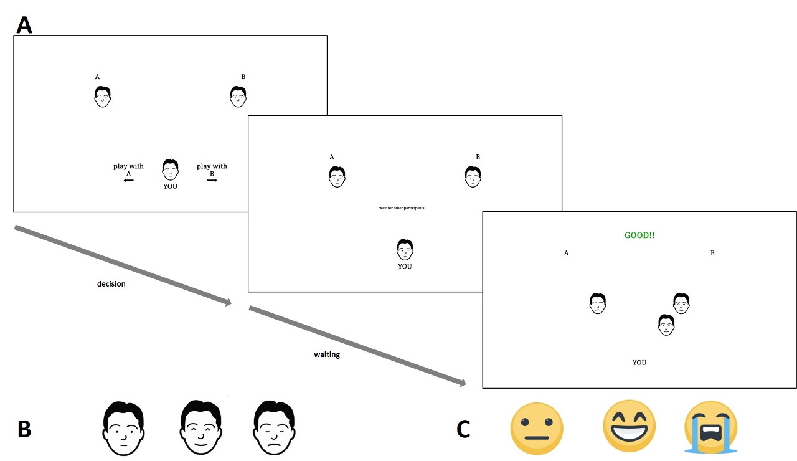

Research Methods
Data, data, data...
I quicky realized that data science and statistics came natural to me. In my PhD, I spent a good amount of time learning as much as possible on data analysis, research methods, and machine learning.
At that point, my vocation as a methodologist was undeniable. I expanded my statistical toolkit so much that it secured me a brief excursus outside of academia when I served as Data Scientist for a consulting firm.
Moving back into academia, I pursued my vocation and a couple of departments trusted my expertise enough to ask me to teach master's courses in data science (Heidelberg University) and Psychometrics (University of Bergamo).
Besides teaching, I put my skills to work and scored a few methods-oriented pubblications, one of which even earned me an award.
Statistical Approach
Before moving into the most advanced tools in my toolking (I'm saving the best for last!), it's worth mentioning that I'm trained in classical statistical data analysis and psychometrics. I thought both disciplines at the bachelor's and master's levels.
Publication-wise, I have two papers on these "classics". One proposing a novel mixed-model based approach to model information integration (Rebholz, Biella & Hütter, 2024), and another one on a very classical scale development with a full psychometric assessment of the tool (Biella et al., 2025).
In Rebholz, Biella & Hütter (2024), we proposed a mixed-model based approach to information sampling and utilization (e.g., in advice-taking) that overcomes artifacts and paradoxes built into classical approaches. Moreover, this approach is unbelievably flexible and it can be used any time multiple pieces of information are combined into a single judgment.
As a side-note, Rebholz, Biella & Hütter (2024) is the Top Cited Article 2025 in the Journal of Behavioral Decision Making.
In Biella et al. (2025), my coauthors and I ran a comprehensive psychometric evaluation of our adaptation of the Vaccination Attitudes Examination (VAX) Scale. This tool is extremely valuable for reducing vaccination hesitancy, supporting disease spreading countermeasure, and fighting anti-vaccination misinformation (see Biella et al. (2023) and Biella & Batzdorfer (2026)).
Bayesian Approach
That being said, I have a confession to make. Over the years, I sowly turned toward the dark side of Bayesian Statistics. The debate between frequentists and Bayesians often takes the colors of a religious war, which is something we should avoid. I believe that the only way to make "enemies" talk to each others is via mutual understanding and knowing each others. For this reason, some colleagues and I are preparing a tutoarial on Bayesian Statistics hoping to score an agreement between Bayesians and frequentists, but most importantly, between authors and editors/reviewers.
The goal is to agree on the "rules of the game", on how a prior can be properly justified by the authors and fairly assessed by the editors/reviewers, or how to set an accetpable evidence level for Bayes factors. We need to avoid arbitrarily set cut-offs (e.g., p-value<.05, power=.80). We have to act now that those arbitrary conventions are not set yet! We'll share the preprint as soon as possible.
Big Data Approach
As data science is a passion of mine, I didn't let the chance to work with big data pass by. Leveraging the pandemic, I let a colleague involve me in a social media project (Batzdorfer, Steinmetz, Biella, & Alizadeh, 2021) that offered us the chance to work with an enormous amount of data. We focused our attention on conspiracy theories and how they spread of social media (X, still called Twitter at the time). At the time, we had the support of Veronika (Dr. Batzdorfer)'s university so the computing infrastructure was not a problem.
However, I had the opportunity to "get my hands" on cloud computing on a subsequent project in which we attempted to model online users' reactions to politically charged events using Latent Dirichlet Allocation. That project had trivial results so is stuck at the moment. But, it offered me the chance of learning Google Cloud Platform (cloud computing is a must-have tool for every data scientist) and to put a Google Cloud for Researcher grant on my CV.
Finally, I combined social media research (Batzdorfer, Steinmetz, Biella, & Alizadeh, 2021) with misinformation research (Biella & Batzdorfer, 2026). Together with some colleagues, we investigated how media diet, not only social media, affects vaccination attitudes finding that social media consumption is actually a protective factor against developing an anti-vaccination attitude (Biella et al., 2023).
Empirical Approach
The last research method I developed it's a fully fledged experimental paradigm. I found myself needing an empirical paradigm manipulating social distance in a within-subjects design and a quick literature search found nothing. So, I took a little inspiration from Cyberball, a paradigm to induce ostracism, removed the conditions to induce social isolation, completed a full research program to validate the paradigm, and the interaction game was born!

The game is very simple and the validation is confirmed we reached all our goals. The Interaction Game makes the partecipant perceive one of the two other players as socially closer while the remaining player is perceived as socially distant. In the paradigm, there is no ground for any social exclusion and our validation confirmed that participants' need to belong is completely untouched. Similarly, the Interaction Game does not induce negative emotion which might be responsible for potential reaffiliation behavior. To be on the safe side, we measured emotions with both the discrete and the dimensional framework. The finding still holds. In a nutshell, the Interaction Game manipulates perceived social distance effectively, withouth triggering any undesired side effect.You can find all the details in the validation paper (Biella, Rebholz, Holthausen & Hütter, 2023).
Related Publications
Biella, M., & Batzdorfer, V. (2026). Editorial: The phenomenon of misinformation in different domains and by various disciplines. Frontiers in Psychology.
Biella, M., Gemignani, A., Conversano, C., Miniati, M., & Orrù, G. (2025). Psychometric Assessment of the Italian Version of the Vaccination Attitudes Examination (VAX) Scale and Exploration of its Link with Policy Endorsement. Collabra: Psychology.
Rebholz, T., Biella, M., & Hütter, M. (2024). Mixed-Effects Regression Weights for Advice Taking and Related Phenomena of Information Sampling and Utilization. Journal of Behavioral Decision Making.
Biella, M., Rebholz, T., Holthausen, M., & Hütter, M. (2023). The Interaction Game: Development and Validation of an Experimental Paradigm for Manipulating Social Distance. Journal of Applied Social Psychology.
Biella, M., Orrù, G., Ciacchini, R., Conversano, C., Marazziti, D., & Gemignani A. (2023). Anti-vaccination attitude and vaccination intentions against COVID-19: a retrospective cross-sectional study investigating the role of media consumption. Clinical Neuropsychiatry.
Batzdorfer, V., Steinmetz, H., Biella, M., & Alizadeh, M. (2021). Conspiracy theories on Twitter: emerging motifs and temporal dynamics during the COVID-19 pandemic. International Journal of Data Science and Analytics.